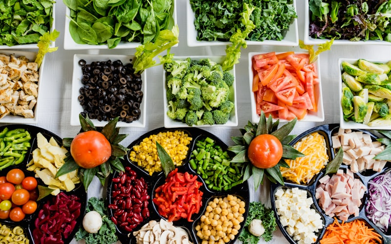
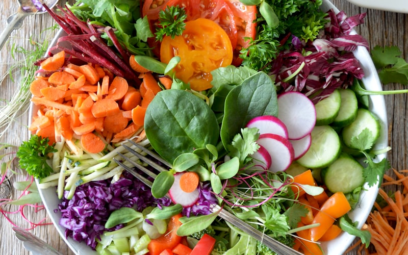
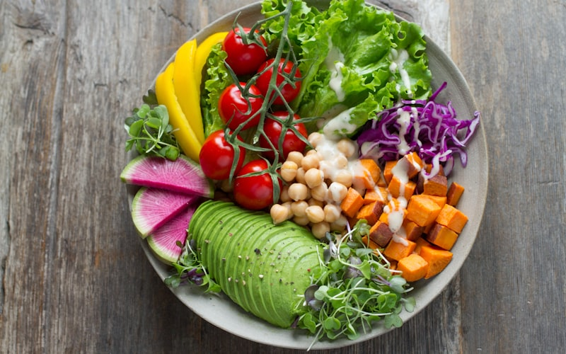
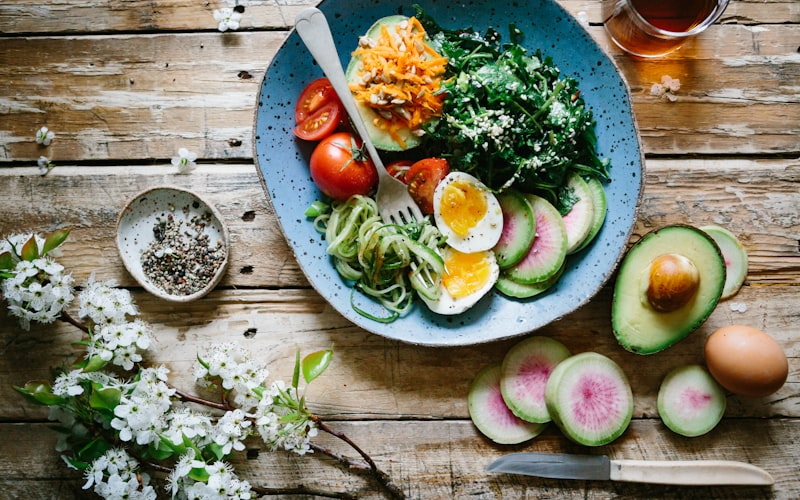

Bien-être
Comment j'ai arrêté de compenser mes émotions avec la nourriture
Manger pour gérer le stress, l'ennui ou la tristesse — c'est humain. Voici ce qui m'a vraiment aidée à changer.
Conseils, astuces et inspirations pour t'accompagner dans ta transformation au quotidien.
Manger pour gérer le stress, l'ennui ou la tristesse — c'est humain. Voici ce qui m'a vraiment aidée à changer.

Les années de régimes ont peut-être ralenti ton métabolisme. Ce n'est pas irréversible.

Moins de fringales, plus d'énergie, peau plus nette, perte de poids — stabiliser sa glycémie change bien plus que le poids.

Le foie est l'organe le plus sous-estimé dans la perte de poids. Quand il est surchargé, il bloque tout.
Les kilos en trop ne sont pas le problème — ils en signalent un autre. Comprendre ça change tout.

Salade le midi, pas de sucre, pas de gras — et tu stockes quand même. Ce n'est pas une fatalité.

Tu manges bien, tu fais attention, et pourtant rien ne bouge. Ce n'est pas ta faute. Voici ce que personne ne t'a encore expliqué.